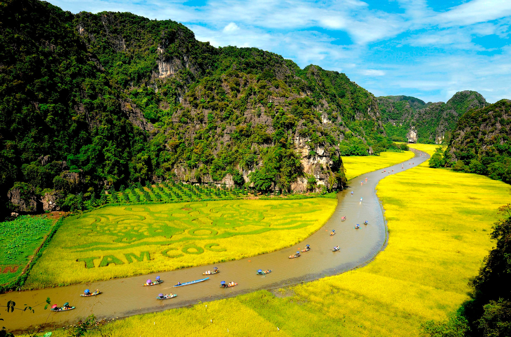
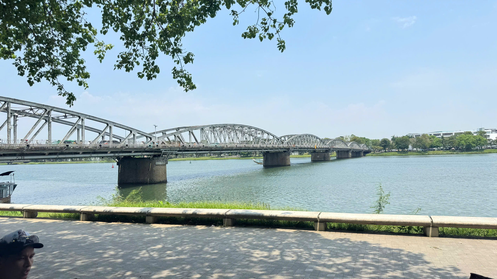
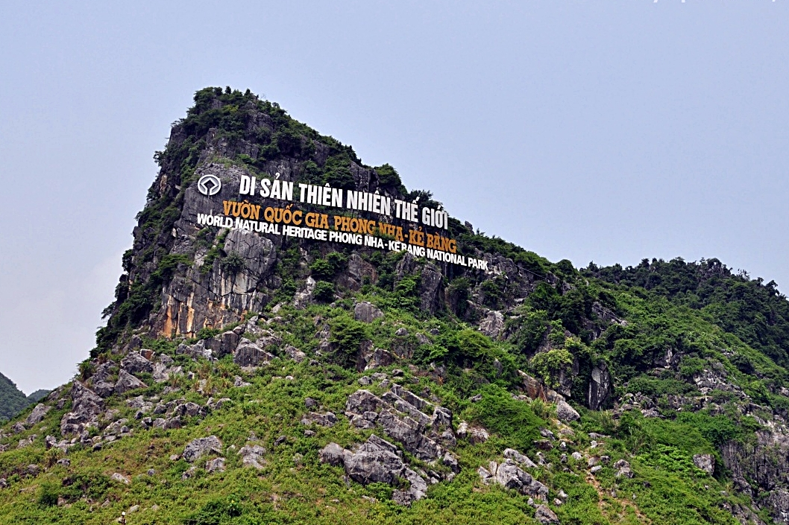
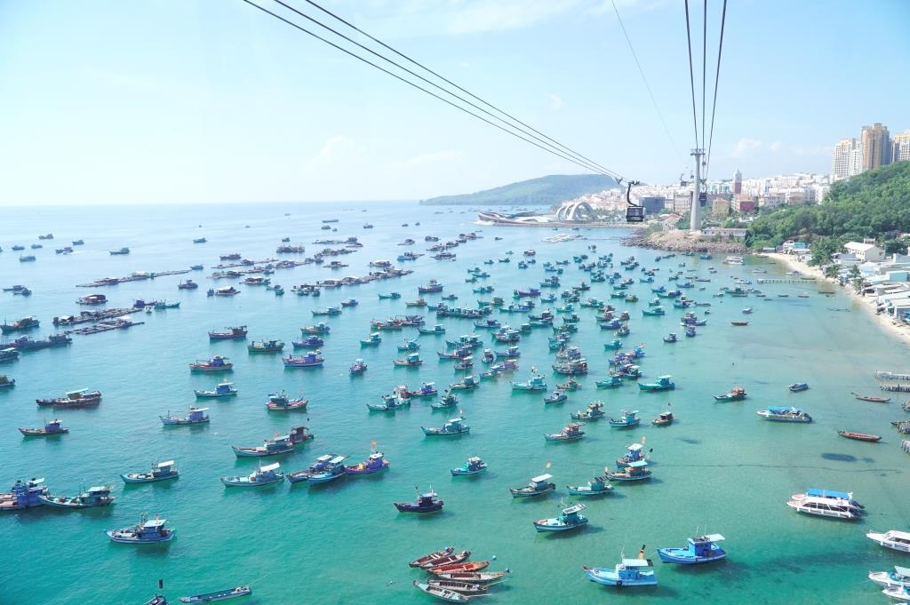

Hạ Long Bay
Drift among limestone karsts, kayak through sheltered coves, or spend a night aboard a boat. A classic choice for dramatic seascapes.
Cruises · Nature Link image for Hạ Long BayA holiday inspiration guide
From lantern-lit old towns and mountain air to quiet beaches and river life, find a destination that fits your kind of getaway.
Vietnam stretches from cool northern highlands to tropical southern shores. These ten destinations offer a mix of culture, scenery, food, and time to unwind.
Drift among limestone karsts, kayak through sheltered coves, or spend a night aboard a boat. A classic choice for dramatic seascapes.
Cruises · Nature Link image for Hạ Long Bay 02
02
Wander a beautifully preserved old town, browse riverside markets, and enjoy lantern-lit evenings. An Cẩm An beach is nearby for a slower day.
Heritage · Food Link image for Hội AnExplore the Old Quarter, lakeside paths, temples, and a lively café scene. It’s also a convenient starting point for trips into northern Vietnam.
Culture · City break Link image for Hà NộiTake in mountain views, terraced fields, and village trails in the country’s northwest. Pack layers: the highland weather can change quickly.
Mountains · Trekking Link image for Sa Pa
05Take a small-boat ride through limestone scenery and rice fields, then visit temples and viewpoints. It’s often called “Ha Long Bay on land.”
Scenery · Slow travel Link image for Ninh Bình
06Discover the former imperial capital’s citadel, royal tombs, and distinctive central Vietnamese cuisine along the Perfume River.
History · Food Link image for Huế 07
07
Pair a sandy city beach with excellent local food, the Marble Mountains, and easy access to Hội An. A flexible base for central Vietnam.
Beach · City Link image for Da Nang
08Visit a remarkable karst landscape known for caves, rivers, and jungle. Choose from gentle cave visits to more adventurous guided outings.
Caves · Adventure Link image for Phong Nha-Kẻ Bàng 09
09
Experience energetic street life, museums, markets, and a wide range of southern Vietnamese food. It’s a lively gateway to the Mekong Delta.
City life · Food Link image for Ho Chi Minh city
10Slow down on an island getaway with beaches, warm water, and seafood. Check seasonal weather when planning a beach-focused visit.
Island · Relaxation Link image for Phú QuốcNot sure where to go? Let fate choose.